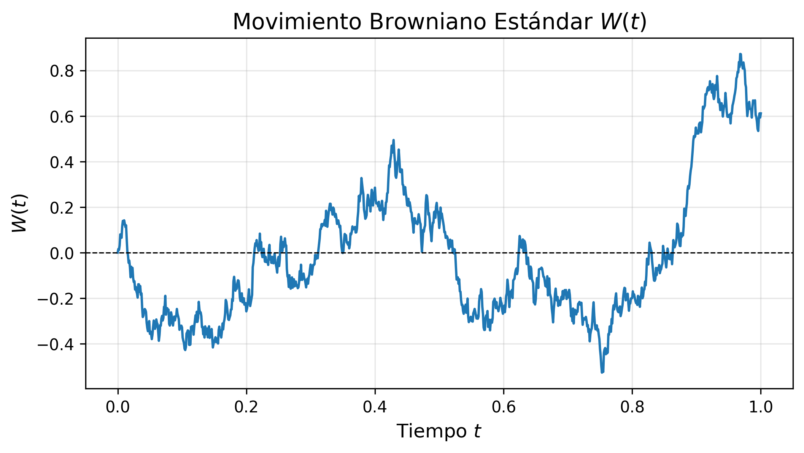
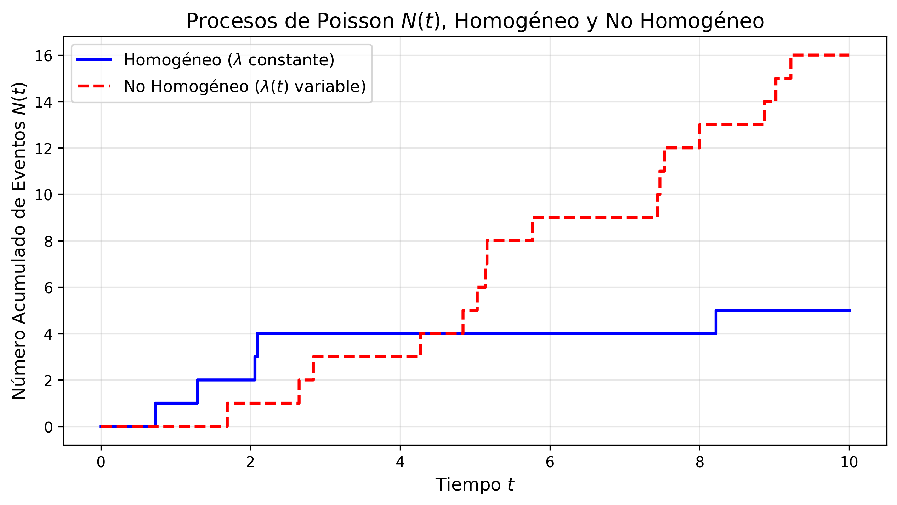
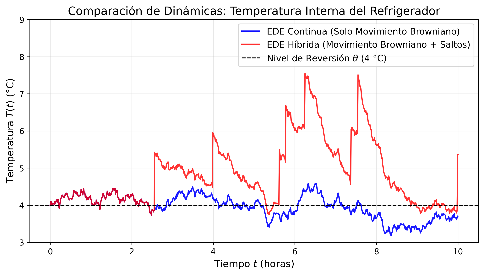

2 Fundamentos Teóricos
En este capítulo se presentarán las bases conceptuales y el marco formal del cálculo estocástico que fundamentan el desarrollo de nuestro modelo matemático para la red de frío. Se definirán en primer lugar los procesos estocásticos elementales para, posteriormente, construir la ecuación diferencial estocástica (EDE) híbrida que rige el sistema.
2.1 Procesos Estocásticos
El modelado térmico de un refrigerador de vacunas expuesto a incertidumbres continuas y perturbaciones discretas requiere herramientas más allá del cálculo determinista. Desde una perspectiva analítica, un proceso estocástico representa la generalización de una variable aleatoria indexada en un conjunto ordenado, parametrizando la evolución de un sistema bajo incertidumbre.
Definición 2.1 (Proceso Estocástico) Sea \((\Omega, \mathcal{F}, \mathbb{P})\) un espacio de probabilidad y sea \(\mathcal{S} \subseteq \mathbb{R}^d\) un espacio muestral dotado de su respectiva \(\sigma\)-álgebra de Borel. Un proceso estocástico es una familia de variables aleatorias \(\{X_t\}_{t \in \mathcal{T}}\) parametrizadas por \(t \in \mathcal{T}\), donde \(\mathcal{T} \subseteq \mathbb{R}\), y para cada \(X_t: \Omega \to \mathcal{S}\) es una función medible para cada \(t \in \mathcal{T}\).
Dependiendo de como es el conjunto de índices \(\mathcal{T}\), los procesos estocásticos se clasifican en dos:
- Procesos estocásticos a tiempo discreto: Si \(\mathcal{T}\) es numerable, por lo general \(\mathcal{T} = \mathbb{N}_0 = \{0, 1, 2, \dots\}\) o \(\mathcal{T} = \mathbb{Z}\), decimos que el proceso estocástico es a tiempo discreto. En este escenario, el sistema evoluciona mediante transiciones discretas en pasos fijos discretizados.
- Procesos estocásticos a tiempo continuo: Si \(\mathcal{T}\) es un intervalo de \(\mathbb{R}\), por lo general \(\mathcal{T} = [0, \infty)\) o un intervalo acotado \(\mathcal{T} = [0, T]\), \(T > 0\). Esta estructura es la adecuada para modelar fenómenos físicos continuos, como la transferencia térmica.
Para enlazar la teoría probabilística con la observación empírica de un fenómeno estocástico, es indispensable establecer la distinción entre el espacio funcional del proceso y sus realizaciones particulares.
Definición 2.2 (Trayectorias del Proceso Estocástico) Si \(\{X(t)\}_{t \geq 0}\) es un proceso estocástico a tiempo continuo, para cada \(\omega \in \Omega\) fijo y \(\mathcal{S} = \mathbb{R}\), se definen las trayectorias del proceso como: \[ T = [0, \infty) \rightarrow \mathcal{S} = \mathbb{R} \] \[ t \rightarrow X_t(\omega). \]
Las propiedades analíticas de un proceso estocástico, tales como la continuidad, la diferenciabilidad y la presencia de discontinuidades finitas, se definen estrictamente a partir del comportamiento matemático de sus trayectorias (Platen y Bruti-Liberati 2010). Los componentes aleatorios de nuestro sistema se sustentan en tres procesos estocásticos específicos a tiempo continuo.
2.1.1 Movimiento Browniano (Proceso de Wiener)
Para representar las fluctuaciones térmicas continuas de baja intensidad asociadas al ruido intrínseco del termostato y microtransferencias de calor se utiliza el movimiento Browniano.
Definición 2.3 (Proceso de Wiener) Un proceso estocástico continuo en el tiempo \(\{W(t)\}_{t \ge 0}\) definido sobre un espacio de probabilidad filtrado \((\Omega, \mathcal{F}, \{\mathcal{F}_t\}, \mathbb{P})\) es un movimiento Browniano estándar o proceso de Wiener si cumple con las siguientes propiedades:
- \(W(0) = 0\) con probabilidad 1.
- Posee incrementos independientes; es decir, para cualesquiera tiempos \(0 \le t_1 < t_2 < \dots < t_n\), las variables aleatorias \(W(t_2)-W(t_1), \dots, W(t_n)-W(t_{n-1})\) son mutuamente independientes.
- Posee incrementos estacionarios gaussianos tales que para todo \(t > s \ge 0\), el incremento \(W(t) - W(s) \sim \mathcal{N}(0, t-s)\).
- Sus trayectorias son continuas con probabilidad 1.
El término \(dW(t) = W(t+dt) - W(t)\) representa el diferencial del proceso de Wiener. Este denota una perturbación gaussiana elemental en un intervalo infinitesimal \(dt\), caracterizada matemáticamente por una media \(\mathbb{E}[dW(t)] = 0\) y una varianza \(\mathbb{E}[(dW(t))^2] = dt\). Para una revisión detallada sobre las propiedades de medida y construcciones analíticas de este proceso, se sugiere consultar a (Platen y Bruti-Liberati 2010).

2.1.2 Proceso de Poisson Homogéneo
Las aperturas de las puertas del refrigerador por el personal médico constituyen eventos discretos y repentinos que alteran instantáneamente la temperatura interna. Este tipo de fenómenos se modela mediante un proceso estocástico continuo en el tiempo de saltos puros.
Definición 2.4 (Proceso de Poisson) Un proceso estocástico lineal continuo en el tiempo \(\{N(t)\}_{t \ge 0}\) que toma valores enteros en el espacio de estados \(\mathcal{S} = \mathbb{N}_0\) es un proceso de Poisson homogéneo con parámetro de intensidad constante \(\lambda > 0\) si satisface las siguientes condiciones:
- \(N(0) = 0\) con probabilidad 1.
- Posee incrementos independientes; de tal manera que para cualquier secuencia temporal finita \(0 \le t_1 < t_2 < \dots < t_n\), las variables aleatorias discretas \(N(t_2)-N(t_1), \dots, N(t_n)-N(t_{n-1})\) son mutuamente independientes en sentido probabilístico.
- Posee incrementos estacionarios; lo que implica que la ley de probabilidad de cualquier incremento \(N(t+s) - N(s)\) depende únicamente de la amplitud temporal \(t\) y resulta invariante ante traslaciones sobre el origen cronológico \(s\). De forma explícita, la variable aleatoria \(N(t)\) sigue una distribución de Poisson con parámetro o tasa media dada por el producto \(\lambda t\):
\[ \mathbb{P}(N(t) = n) = \frac{(\lambda t)^n e^{-\lambda t}}{n!}, \quad n = 0, 1, 2, \dots \]
Para formalizar analíticamente el comportamiento probabilístico de los saltos sin recurrir a nociones intuitivas, las probabilidades de transición asociadas al incremento del proceso en un intervalo acotado de longitud \(h > 0\) se especifican rigurosamente mediante el límite asintótico cuando \(h \to 0\):
\[ \mathbb{P}(N(t+h) - N(t) = 1) = \lambda h + o(h) \] \[ \mathbb{P}(N(t+h) - N(t) \ge 2) = o(h) \]
donde la notación algebraico-asintótica de Landau \(o(h)\) denota una función de orden superior tal que \(\lim_{h \to 0} \frac{o(h)}{h} = 0\). Esto garantiza formalmente que la probabilidad de ocurrencia de múltiples eventos simultáneos en una fracción temporal infinitesimal es prácticamente nula. Una exposición rigurosa sobre los procesos de conteo y sus aplicaciones en sistemas con discontinuidades puede encontrarse en Platen y Bruti-Liberati (2010).

2.1.3 Cadenas de Markov de Tiempo Continuo
Los fallos prolongados en el suministro eléctrico de la red pública alteran estructuralmente la dinámica del sistema. Para modelar estas transiciones entre estados macroscópicos del entorno, introducimos una cadena de Markov en tiempo continuo.
Definición 2.5 (Proceso de Conmutación de Régimen) Sea \(\{\alpha(t)\}_{t \ge 0}\) un proceso estocástico que toma valores en un espacio de estados finito y discreto \(\mathcal{M} = \{1, 2, \dots, m\}\). Se dice que \(\alpha(t)\) es una cadena de Markov en tiempo continuo si para todo \(s, t \ge 0\) y estados \(i, j \in \mathcal{M}\), cumple la propiedad de Markov:
\[ \mathbb{P}(\alpha(t+s) = j \mid \alpha(s) = i, \alpha(u) = \alpha_u, 0 \le u < s) = \mathbb{P}(\alpha(t+s) = j \mid \alpha(s) = i) \]
Las leyes de transición y la evolución temporal de las probabilidades de estado de la cadena \(\{\alpha(t)\}_{t \ge 0}\) se encuentran completamente caracterizadas y gobernadas por el operador generador infinitesimal o matriz de intensidades de transición \(Q = (q_{ij}) \in \mathbb{R}^{m \times m}\). Si definimos las funciones de probabilidad de transición condicional mediante \(p_{ij}(h) = \mathbb{P}(\alpha(t+h) = j \mid \alpha(t) = i)\) para un incremento temporal positivo \(h > 0\), las componentes de la matriz \(Q\) se determinan rigurosamente evaluando el límite analítico en el origen:
- Para transiciones entre estados distintos (\(i \neq j\)), la componente \(q_{ij}\) representa la tasa instantánea o intensidad de conmutación desde el régimen \(i\) hacia el régimen \(j\), definida formalmente como:
\[ q_{ij} = \lim_{h \to 0^+} \frac{p_{ij}(h)}{h} \ge 0 \]
- Para los elementos situados sobre la diagonal principal (\(i = j\)), la componente \(q_{ii}\) representa la tasa neta de salida del estado \(i\), cumpliendo por conservación de la probabilidad que la suma por filas de la matriz \(Q\) sea idénticamente nula:
\[ q_{ii} = \lim_{h \to 0^+} \frac{p_{ii}(h) - 1}{h} = -\sum_{j \neq i} q_{ij} \]
A través de esta formulación matemática formal basada en límites, las probabilidades de transición de primer orden quedan descritas asintóticamente mediante las expresiones \(p_{ij}(h) = q_{ij}h + o(h)\) para \(i \neq j\), y \(p_{ii}(h) = 1 + q_{ii}h + o(h)\). Esto permite modelar las conmutaciones macroscópicas de la dinámica del refrigerador sin necesidad de introducir variables temporales discretas ni heurísticas infinitesimales vagas. Los lectores interesados en profundizar en las propiedades asintóticas y de estabilidad de estos procesos híbridos pueden remitirse al texto especializado de Yin y Zhu (2010).
2.2 Formulación de la Ecuación Diferencial Estocástica General
Una vez definidos los elementos estocásticos elementales, es posible formular el marco matemático que unifica la evolución analítica continua con las perturbaciones aleatorias macroscópicas y los saltos microscópicos discretos. De acuerdo con el marco general desarrollado por Yin y Zhu (2010) y Platen y Bruti-Liberati (2010), una Difusión Híbrida con Conmutación de Régimen y Saltos se define formalmente mediante el siguiente sistema de ecuaciones diferenciales estocásticas:
\[ dT(t) = \mu(T(t), \alpha(t)) dt + \sigma(T(t), \alpha(t)) dW(t) + \gamma(T(t^-), \alpha(t^-)) dN(t) \tag{2.1}\]
En la Ecuación 2.1, el término \(T(t^-) = \lim_{s \to t^-} T(s)\) preserva la propiedad de continuidad por la izquierda con límites por la derecha (càdlàg) del proceso ante la ocurrencia de un salto. Las funciones de coeficientes se definen como: \[\mu: \mathbb{R} \times \mathcal{M} \to \mathbb{R} \quad \text{(Coeficiente de deriva o tendencia)}\] \[\sigma: \mathbb{R} \times \mathcal{M} \to \mathbb{R} \quad \text{(Coeficiente de difusión o volatilidad)}\] \[\gamma: \mathbb{R} \times \mathcal{M} \to \mathbb{R} \quad \text{(Magnitud o intensidad del impacto del salto)}\]
El acoplamiento funcional con la cadena de Markov \(\alpha(t)\) implica que los parámetros estructurales del sistema cambian de forma aleatoria e instantánea cuando el entorno macroscópico conmuta de estado.
Para ilustrar el impacto de nuestra formulación matemática sobre el modelado físico de la red de frío, es fundamental contrastar el comportamiento de las trayectorias resultantes. La simulación numérica del modelo revela cómo la incorporación de discontinuidades captura fenómenos que los modelos clásicos omiten.

Como evidencia la Figura 2.3, modelar el sistema exclusivamente con componentes difusivos continuos subestima severamente el riesgo de excursiones térmicas fuera del rango normativo de la OMS (2 °C a 8 °C). La inclusión del proceso de saltos justifica nuestra necesidad de utilizar el Lema de Itô generalizado, ya que la temperatura experimenta cambios finitos instantáneos que rompen la diferenciabilidad clásica del modelo.
2.3 El Modelo Estocástico de Red de Frío (Ornstein-Uhlenbeck Modificado)
Pasando del marco matemático abstracto a la física de nuestro problema particular, adaptamos la Ecuación 2.1 bajo una estructura termodinámica de reversión a la media. Postulamos que la dinámica de la temperatura interna \(T(t)\) de un refrigerador institucional de vacunas se rige por la siguiente ecuación diferencial estocástica de Ornstein-Uhlenbeck híbrida con saltos de Poisson:
\[ dT(t) = \kappa(\alpha(t)) [\theta(\alpha(t)) - T(t)] dt + \sigma(\alpha(t)) dW(t) + \gamma dN(t) \tag{2.2}\]
Bajo esta parametrización particular, el espacio de estados de la cadena de Markov se restringe a dos regímenes operativos fundamentales, \(\mathcal{M} = \{1, 2\}\), cuyas implicaciones físicas y estocásticas se detallan en los siguientes conceptos:
Definición 2.6 (Inercia Térmica y Parámetros Estructurales) La inercia térmica es la capacidad de la masa interna del refrigerador (biológicos, paquetes refrigerantes y botellas de agua) para amortiguar la transferencia de calor del exterior. En la Ecuación 2.2, se modela mediante el coeficiente de velocidad de reversión \(\kappa(\alpha(t)) > 0\). A mayor inercia térmica, menor será el valor de \(\kappa\) en ausencia de energía eléctrica, retrasando el calentamiento del refrigerador. El parámetro de volatilidad \(\sigma(\alpha(t)) > 0\) cuantifica la magnitud del ruido continuo gaussiano inducido por el ciclo del compresor.
Definición 2.7 (Corte de Energía (Conmutación de Régimen)) Se define como la transición macroscópica de la cadena de Markov debido a fallos en el suministro eléctrico. El sistema conmuta del régimen con suministro normal (\(\alpha(t) = 1\)) al régimen de falla (\(\alpha(t) = 2\)). Esta conmutación altera los límites asintóticos de la deriva en la Ecuación 2.2:
- Régimen \(\alpha(t) = 1\): El sistema converge a la temperatura óptima de consigna del termostato, es decir, \(\theta(1) = 5^\circ\text{C}\).
- Régimen \(\alpha(t) = 2\): Al apagarse el motor, el sistema interrumpe el enfriamiento y la temperatura interna comienza a converger hacia la temperatura ambiente exterior del centro de salud, parametrizada por \(\theta(2) = T_{\text{amb}}\).
Definición 2.8 (Apertura de Puertas (Perturbaciones por Saltos)) Corresponde a la intrusión brusca de aire cálido exterior provocada por la manipulación operativa del personal de enfermería. Este fenómeno ocurre de forma intermitente y se modela en la Ecuación 2.2 mediante el término de saltos \(\gamma dN(t)\), donde \(\gamma > 0\) representa el incremento térmico discreto e instantáneo en grados Celsius cada vez que el diferencial del proceso de Poisson registra un evento (\(dN(t) = 1\)).
2.4 El Lema de Itô Generalizado
La resolución analítica explícita o la justificación de esquemas de aproximación numérica convergentes (tales como el método de Euler-Maruyama para la simulación de Montecarlo) requiere una extensión del cálculo diferencial estocástico clásico. Apoyados en los desarrollos fundamentales de Yin y Zhu (2010) y Platen y Bruti-Liberati (2010), establecemos el siguiente teorema analítico que rige el cálculo sobre trayectorias discontinuas con conmutación:
Teorema 2.1 (Fórmula de Itô para Difusiones Híbridas con Saltos) Sea \(V(t, T, i)\) una función continuamente diferenciable en su componente temporal \(t\), y dos veces continuamente diferenciable en su componente espacial \(T\) para cada régimen operativo \(i \in \mathcal{M}\). Si \(T(t)\) es un proceso que satisface la Ecuación 2.1, entonces el diferencial estocástico de la función compuesta \(V(t, T(t), \alpha(t))\) viene dado por:
\[ \begin{aligned} dV(t, T(t), \alpha(t)) = & \left[ \frac{\partial V}{\partial t} + \frac{\partial V}{\partial T}\mu(T, \alpha) + \frac{1}{2}\frac{\partial^2 V}{\partial T^2}\sigma^2(T, \alpha) + \sum_{j \in \mathcal{M}} q_{\alpha(t)j}V(t, T, j) \right] dt \\ & + \frac{\partial V}{\partial T}\sigma(T, \alpha) dW(t) + \left[ V(t, T(t^-) + \gamma, \alpha(t^-)) - V(t, T(t^-), \alpha(t^-)) \right] dN(t) \end{aligned} \tag{2.3}\]
Como se puede apreciar en el Teorema 2.1, el operador diferencial de Itô se expande de manera elegante. El primer término entre corchetes añade a la derivada temporal y al generador de difusión clásico una sumatoria ponderada por las tasas de transición \(q_{ij}\) de la matriz \(Q\), lo cual captura el efecto del cambio estructural en la deriva. Por su parte, la componente final sustituye la derivada espacial tradicional por un operador de diferencias finitas encargado de absorber la discontinuidad inelástica en los tiempos de salto del proceso de Poisson.